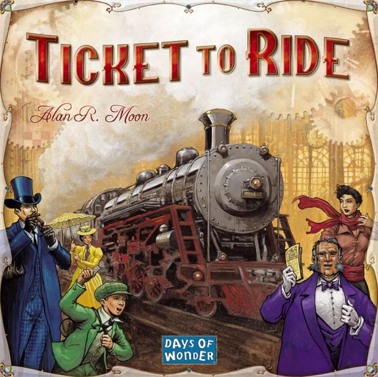
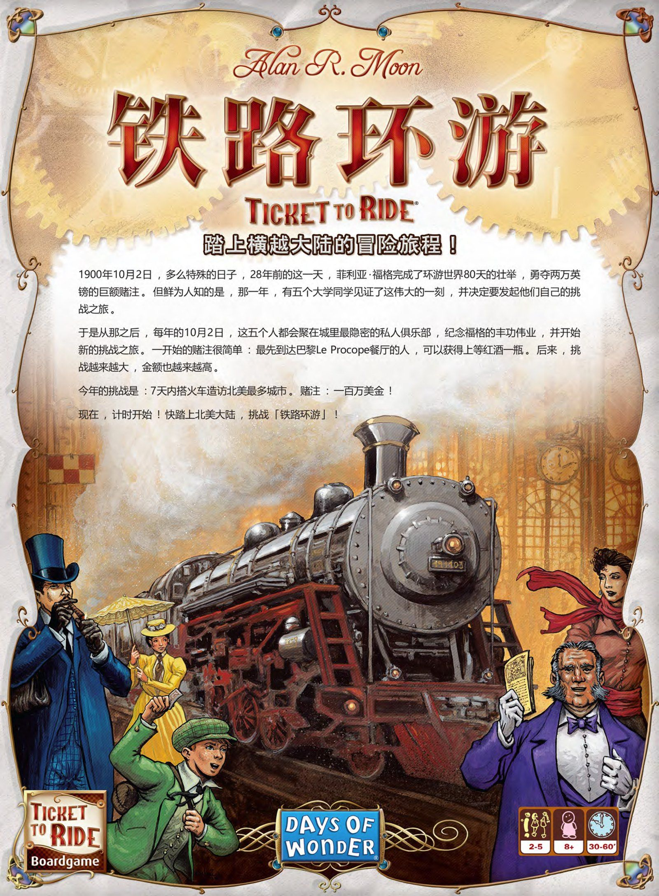
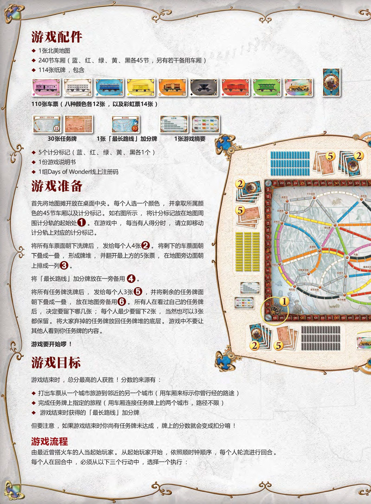
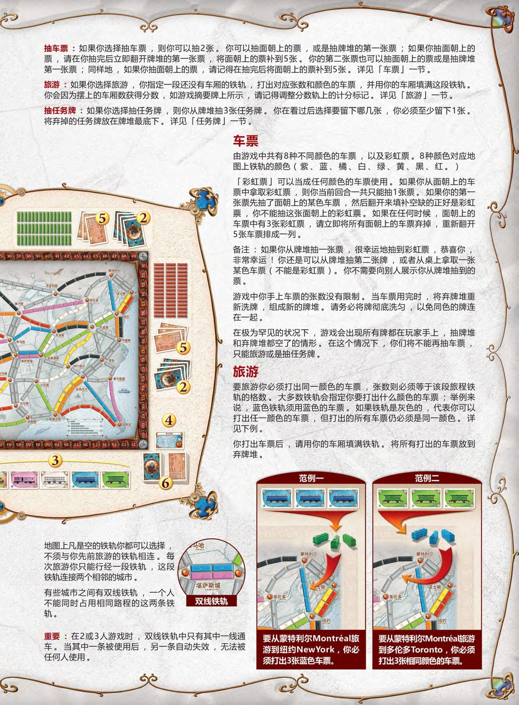
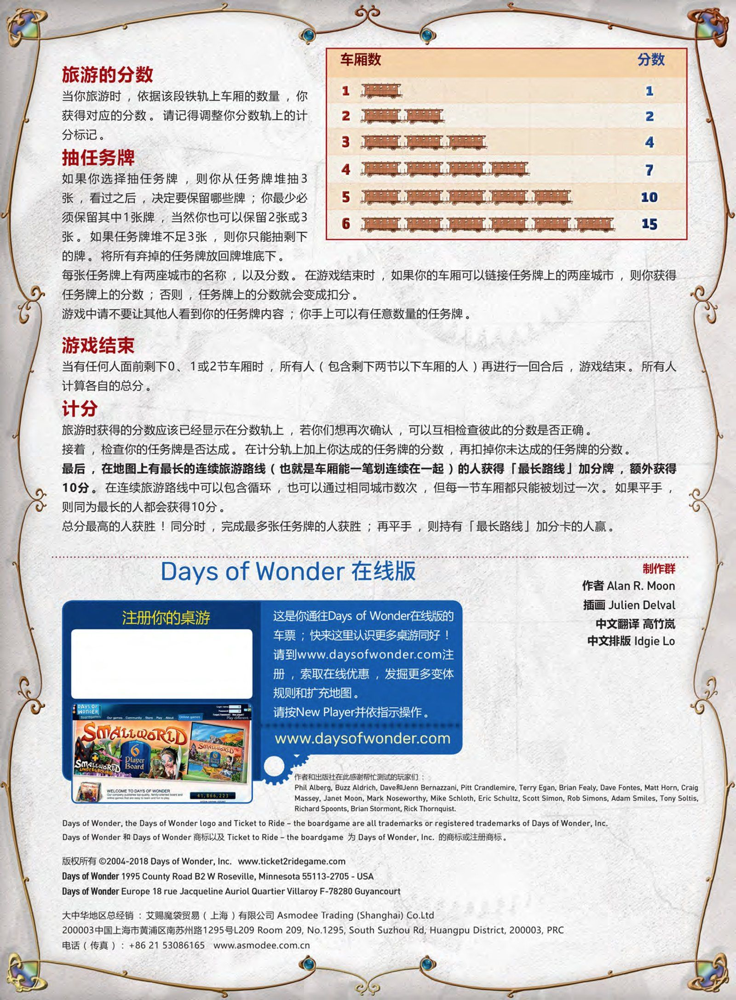

铁路环游
Ticket to Ride · 官方中文规则书全文转录

本页整理自《铁路环游》（Ticket to Ride）官方中文规则书（Alan R. Moon 设计，Days of Wonder 出版，中文翻译 高竹岚，版权行 ©2004-2018），共 5 页逐页转录，并在对应章节嵌入原书扫描页供对照。内容涵盖背景故事、配件清单、游戏准备、游戏目标与回合三行动（抽车票／旅游／抽任务牌）、彩虹票细则、双线铁轨、车厢计分表、游戏结束与最终计分，以及 Days of Wonder 在线版说明与制作群。规则内容归版权方所有，转录仅供个人学习查阅。
整理说明：原书用语照录——「车票」指火车牌（8 种颜色各 12 张，「彩虹票」即万能机车牌 14 张），「旅游」指打牌铺轨这一行动，「任务牌」即目的地票卡；「分数轨／计分轨」「加分牌／加分卡」等混用均按原书位置保留。「车票」一节段首的「由」字为原书衍文，照录。
背景故事

1900年10月2日，多么特殊的日子，28年前的这一天，菲利亚·福格完成了环游世界80天的壮举，勇夺两万英镑的巨额赌注。但鲜为人知的是，那一年，有五个大学同学见证了这伟大的一刻，并决定要发起他们自己的挑战之旅。
于是从那之后，每年的10月2日，这五个人都会聚在城里最隐密的私人俱乐部，纪念福格的丰功伟业，并开始新的挑战之旅。一开始的赌注很简单：最先到达巴黎Le Procope餐厅的人，可以获得上等红酒一瓶。后来，挑战越来越大，金额也越来越高。
今年的挑战是：7天内搭火车造访北美最多城市。赌注：一百万美金！
现在，计时开始！快踏上北美大陆，挑战「铁路环游」！
游戏配件

- 1张北美地图
- 240节车厢（蓝、红、绿、黄、黑各45节，另有若干备用车厢）
- 114张纸牌，包含：
- 110张车票（八种颜色各12张，以及彩虹票14张）
- 30张任务牌
- 1张「最长路线」加分牌
- 1张游戏摘要
- 5个计分标记（蓝、红、绿、黄、黑各1个）
- 1份游戏说明书
- 1组Days of Wonder线上注册码
游戏准备
首先将地图摊开放在桌面中央。每个人选一个颜色，并拿取所属颜色的45节车厢以及计分标记。如右图所示，将计分标记放在地图周围计分轨的起始处①。在游戏中，每当有人得分时，请立即移动计分轨上对应的计分标记。
将所有车票面朝下洗牌后，发给每个人4张②。将剩下的车票面朝下叠成一叠，形成牌堆，并翻开最上方的5张票，在地图旁边面朝上排成一列③。
将「最长路线」加分牌放在一旁备用④。
将所有任务牌洗牌后，发给每个人3张⑤，并将剩余的任务牌面朝下叠成一叠，放在地图旁备用⑥。所有人在看过自己的任务牌后，决定要留下哪几张；每个人最少要留下2张，当然也可以3张都保留。将大家舍弃的任务牌放回任务牌堆的底层。游戏中不要让其他人看到你任务牌的内容。
游戏要开始啰！
游戏目标
游戏结束时，总分最高的人获胜！分数的来源有：
- 打出车票从一个城市旅游到邻近的另一个城市（用车厢来表示你曾行经的路途）
- 完成任务牌上指定的旅程（用车厢连接任务牌上的两个城市，路径不限）
- 游戏结束时获得的「最长路线」加分牌
但要注意，如果游戏结束时你尚有任务牌未达成，牌上的分数就会变成扣分唷！
游戏流程
由最近曾搭火车的人当起始玩家。从起始玩家开始，依照顺时钟顺序，每个人轮流进行回合。
每个人在回合中，必须从以下三个行动中，选择一个执行：

抽车票：如果你选择抽车票，则你可以抽2张。你可以抽面朝上的票，或是抽牌堆的第一张票；如果你抽面朝上的票，请在你抽完后立即翻开牌堆的第一张票，将面朝上的票补到5张。你的第二张票也可以抽面朝上的票或是抽牌堆第一张票；同样地，如果你抽面朝上的票，请记得在抽完后将面朝上的票补到5张。详见「车票」一节。
旅游：如果你选择旅游，你指定一段还没有车厢的铁轨，打出对应张数和颜色的车票，并用你的车厢填满这段铁轨。你会因为摆上的车厢数获得分数，如游戏摘要牌上所示，请记得调整分数轨上的计分标记。详见「旅游」一节。
抽任务牌：如果你选择抽任务牌，则你从牌堆抽3张任务牌。你在看过后选择要留下哪几张，你必须至少留下1张。将舍弃的任务牌放在牌堆最底下。详见「任务牌」一节。
车票
由游戏中共有8种不同颜色的车票，以及彩虹票。8种颜色对应地图上铁轨的颜色（紫、蓝、橘、白、绿、黄、黑、红）。
「彩虹票」可以当成任何颜色的车票使用。如果你从面朝上的车票中拿取彩虹票，则你当前回合一共只能抽1张票。如果你的第一张票先抽了面朝上的某色车票，然后翻开来填补空缺的正好是彩虹票，你不能抽这张面朝上的彩虹票。如果在任何时候，面朝上的车票中有3张彩虹票，请立即将所有面朝上的车票弃掉，重新翻开5张车票排成一列。
备注：如果你从牌堆抽一张票，很幸运地抽到彩虹票，恭喜你，非常幸运！你还是可以从牌堆抽第二张牌，或者从桌上拿取一张某色车票（不能是彩虹票）。你不需要向别人展示你从牌堆抽到的票。
游戏中你手上车票的张数没有限制。当车票用完时，将弃牌堆重新洗牌，组成新的牌堆。请务必将牌彻底洗匀，以免同色的牌连在一起。
在极为罕见的状况下，游戏会出现所有牌都在玩家手上，抽牌堆和弃牌堆都空了的情形。在这个情况下，你们将不能再抽车票，只能旅游或是抽任务牌。
旅游
要旅游你必须打出同一颜色的车票，张数则必须等于该段旅程铁轨的格数。大多数铁轨会指定你要打出什么颜色的车票；举例来说，蓝色铁轨须用蓝色的车票。如果铁轨是灰色的，代表你可以打出任一颜色的车票，但打出的所有车票仍必须是同一颜色。详见下例。
你打出车票后，请用你的车厢填满铁轨。将所有打出的车票放到弃牌堆。
地图上凡是空的铁轨你都可以选择，不须与你先前旅游的铁轨相连。每次旅游你只能行经一段铁轨，这段铁轨连接两个相邻的城市。
有些城市之间有双线铁轨，一个人不能同时占用相同路程的这两条铁轨。
重要：在2或3人游戏时，双线铁轨中只有其中一线通车。当其中一条被使用后，另一条自动失效，无法被任何人使用。
- 范例一：要从蒙特利尔Montréal旅游到纽约NewYork，你必须打出3张蓝色车票。
- 范例二：要从蒙特利尔Montréal旅游到多伦多Toronto，你必须打出3张相同颜色的车票。
旅游的分数
当你旅游时，依据该段铁轨上车厢的数量，你获得对应的分数。请记得调整你分数轨上的计分标记。
| 车厢数 | 分数 |
|---|---|
| 1 | 1 |
| 2 | 2 |
| 3 | 4 |
| 4 | 7 |
| 5 | 10 |
| 6 | 15 |
抽任务牌

如果你选择抽任务牌，则你从任务牌堆抽3张，看过之后，决定要保留哪些牌；你最少必须保留其中1张牌，当然你也可以保留2张或3张。如果任务牌堆不足3张，则你只能抽剩下的牌。将所有弃掉的任务牌放回牌堆底下。
每张任务牌上有两座城市的名称，以及分数。在游戏结束时，如果你的车厢可以链接任务牌上的两座城市，则你获得任务牌上的分数；否则，任务牌上的分数就会变成扣分。
游戏中请不要让其他人看到你的任务牌内容；你手上可以有任意数量的任务牌。
游戏结束
当有任何人面前剩下0、1或2节车厢时，所有人（包含剩下两节以下车厢的人）再进行一回合后，游戏结束。所有人计算各自的总分。
计分
旅游时获得的分数应该已经显示在分数轨上，若你们想再次确认，可以互相检查彼此的分数是否正确。
接着，检查你的任务牌是否达成。在计分轨上加上你达成的任务牌的分数，再扣掉你未达成的任务牌的分数。
最后，在地图上有最长的连续旅游路线（也就是车厢能一笔划连续在一起）的人获得「最长路线」加分牌，额外获得10分。在连续旅游路线中可以包含循环，也可以通过相同城市数次，但每一节车厢都只能被划过一次。如果平手，则同为最长的人都会获得10分。
总分最高的人获胜！同分时，完成最多张任务牌的人获胜；再平手，则持有「最长路线」加分卡的人赢。
Days of Wonder 在线版
这是你通往Days of Wonder在线版的车票；快来这里认识更多桌游同好！请到www.daysofwonder.com注册，索取在线优惠，发掘更多变体规则和扩充地图。请按New Player并依指示操作（www.daysofwonder.com）。
制作群：作者 Alan R. Moon · 插画 Julien Delval · 中文翻译 高竹岚 · 中文排版 Idgie Lo
作者和出版社在此感谢帮忙测试的玩家们：Phil Alberg, Buzz Aldrich, Dave和Jenn Bernazzani, Pitt Crandlemire, Terry Egan, Brian Fealy, Dave Fontes, Matt Horn, Craig Massey, Janet Moon, Mark Noseworthy, Mike Schloth, Eric Schultz, Scott Simon, Rob Simons, Adam Smiles, Tony Soltis, Richard Spoonts, Brian Stormont, Rick Thornquist.
Days of Wonder, the Days of Wonder logo and Ticket to Ride – the boardgame are all trademarks or registered trademarks of Days of Wonder, Inc.；Days of Wonder 和 Days of Wonder 商标以及 Ticket to Ride – the boardgame 为 Days of Wonder, Inc. 的商标或注册商标。版权所有 ©2004-2018 Days of Wonder, Inc. www.ticket2ridegame.com Days of Wonder 1995 County Road B2 W Roseville, Minnesota 55113-2705 – USA Days of Wonder Europe 18 rue Jacqueline Auriol Quartier Villaroy F-78280 Guyancourt。大中华地区总经销：艾赐魔袋贸易（上海）有限公司 Asmodee Trading (Shanghai) Co.Ltd，www.asmodee.com.cn。